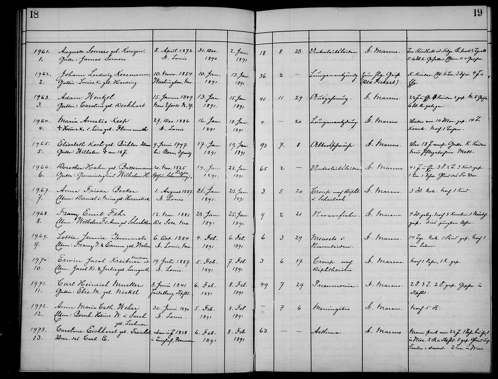

Working conclusion. Charles most likely derives from the Konze surname pool documented in the Trendelburg parish register (spelled Konze / Kontze there), in the territory Charles himself named on his 1866 St. Louis marriage record (“Deisel, Churhessen”). This is an inference to the surname pool, not to a confirmed family or individual — the specific relationship between Charles and the Trendelburg Kontzen line remains unknown (see the confidence section below). The family carried the name abroad in its spoken -en form, KONZEN — the dialectal inflection of Konze (“geb. Konzen” = née Konze) — which is the form every American record preserves. The 1890 St. Marcus death record of his daughter Auguste spells it with a z, the only American attestation of the full Hessian z-form.
The puzzle is that the specific Hessian baptism record naming Charles himself has not been recovered. Three archival threads remain open and any one could surface the entry. The detailed argument and hypotheses below walk through the evidence chain and the candidates that have been eliminated.
spellings · 1866–1896
scribes
attestations
1866 to 1896
hypotheses
tested
The two K-initial records — 1875 baptism and 1890 death
★ The headline record — the 1890 death entry. The St. Marcus death register entry for Charles's daughter Auguste records her maiden surname as:
Auguste Somers geb KONZEN
This is the single American record carrying the full Hessian z-form Konzen — the spelling documented continuously in the Trendelburg parish complex (Hofgeismar Kirchenkreis) since 1773. Maiden-name attestations on death records are among the most carefully captured forms in genealogical practice (used for cemetery / probate / inheritance verification); the May 2026 re-examination of the register image confirmed the reading as Konzen with a z, not Konsen with an s. The 1890 record is therefore the project's strongest single piece of American-side evidence pointing at the Hessian Kontzen / Konzen surname pool.

St. Marcus death register · 1890, entry 1 (top of left page) · “Auguste Somers geb. Konzen” · the single American attestation of the full Hessian z-form · open full-size ↗★ The keystone companion record — the 1875 baptism. Fifteen years earlier, the same parish (St. Marcus) recorded Charles's sixth child as:
Erwin Carl KONSEN
Not Gannsen, not Johnson, not Gonnson — the closest American phonetic match to the Hessian cluster (Konze · Kontze · Kontzen · Contze · Konzen) attested in the Deisel and Trendelburg church books. A German-speaking Lutheran pastor (Julius Hoffmann, Swiss-born), baptizing the child of a German-speaking Lutheran family, used the surname they gave him at the font — spelled it with an s per his ear, but preserved the Hessian K- initial and -en suffix that the louder American renderings (Gannsen, Johnson) eventually shed. Strictly, "Konsen" with an s is not itself one of the five Hesse-attested spellings — no Trendelburg or Deisel parish register carries that exact form; it is the American phonetic capture closest to the documented Hessian cluster.
 St. Marcus baptism register · entry 282 (running №8854) · "Erwin Carl Konsen · Eltern: Carl Konsen u. d. ihm Ehefrau Auguste geb. Kreichelt" · 27 Aug 1875 · Pastor Julius Hoffmann · open full-size ↗
St. Marcus baptism register · entry 282 (running №8854) · "Erwin Carl Konsen · Eltern: Carl Konsen u. d. ihm Ehefrau Auguste geb. Kreichelt" · 27 Aug 1875 · Pastor Julius Hoffmann · open full-size ↗
Together the two K-initial records bracket the surname trail 15 years apart. The 1875 Konsen and the 1890 Konzen are two parallel orthographic variants of the same Hessian root, captured by two different scribes — Konsen with an s (Pastor Hoffmann's phonetic rendering at the baptism) and Konzen with a z (the death-register scribe writing what is, strictly, the documented Trendelburg spelling). Sixteen-plus years after Charles emigrated, his family was still calling itself something a German-speaking pastor recognised as a Hessian-cluster surname.
The Hessian original — the Kontze/Kontzin spelling in the Trendelburg register itself
The American forms above trace back to a surname written, in the family's own parish, with the very tz cluster that an English ear later flattened to nns / ns. Here is that spelling in the Trendelburg confirmation register (KB 1773–1818, Archion 220096), in an entry from Easter 1786 — a daughter recorded under the feminine form Kontzin, her father named with the masculine Kontze, both words underlined by the pastor:
The Konze surname doesn't merely appear in this area — it exists nowhere else around it.
A June 2026 surname-distribution sweep of 29 parishes across two states and two confessions established that the entire Konze / Kontze / Kontzen / Contze / Konzen pool is confined to a single tight cluster in the Diemel valley — Trendelburg · Deisel · Friedrichsfeld · Stammen · Hümme, all within about 5 km. Every surrounding parish — Grebenstein, Immenhausen, Helmarshausen, Hofgeismar, Sielen, Schöneberg, Bad Karlshafen, Gieselwerder, Veckerhagen, and the Catholic Westphalian parishes across the Weser — shows no Konze presence at all. (One man, Christian Ludwig Kontze, gave nearby Gottsbüren as his birthplace in 1833 — but Gottsbüren's own registers are entirely Kontze-free: baptisms, marriages, and burials read across 1795–1833 contain no Kontze at all. The family lived, and died, elsewhere; the statement most likely reflects his mother's home village — the native Gottsbüren Garland family. Gottsbüren is a claimed-but-unconfirmed edge of the cluster, not a sixth documented village.)
Charles named his origin twice, independently — “Deisse, Kreis Cassel, Churhessen” on his 1866 marriage record (= Deisel) and “Freundburg, Kurhessen” on his 1862 enlistment (decoded as Trendelburg). Both land squarely inside the only ~5 km patch on the whole map where the surname occurs. Two self-reported place-names and the geographic footprint of a rare surname converging on the same five villages is powerful, independent corroboration that the name (Konzen) and the place (the Trendelburg–Deisel complex) are correct — even though the individual baptism is still missing. See the Hessian parish map, the Konze family listed by town, and the distribution-sweep log.
Confidence at a glance · this page's load-bearing claims
Per the project's source-rating taxonomy. Confirmed = primary source attached. Working = leading hypothesis pending a dispositive record.
- ✓ Confirmed The 1875 St. Marcus baptism records Charles's sixth child as Erwin Carl Konsen — running entry 8854, Pastor Julius Hoffmann. Original-image attached (Card 6).
- ✓ Confirmed The 1890 St. Marcus death register entry for daughter Auguste reads "Auguste Somers geb. Konzen" with a z — the May 2026 re-examination of the register image confirms the reading is Konzen, not Konsen. Single American attestation of the full Hessian z-form.
- ✓ Confirmed The Schräder verdict (12 April 2026): only one Konze appears in the Deisel emigration list, and it is not Charles. Charles is therefore not a legitimate Konze son.
- ✓ Confirmed Of 8 distinct Konze/Kontzen men tested as possible father (Sessions 18–50, April 2026), 6 are eliminated outright by date, sex, or death; 2 remain inconclusive (a 9th card, the “colonist,” withdrawn 8 Jun 2026 as a misread of Andreas b. 1795); no Konze candidate stays open. Entry 195 of Deisel KB 218842 was closed on 4 May 2026 by Peter Schräder's Kurrent re-reading: the father's surname is Köster (not Konze) and profession Tagelöhner (not Kaufmann), and the child received no first name — the field is "männlich", the convention for an infant who died unbaptized. The prior "two Konze fathers in Deisel, Jan 1835" structural finding collapses to one (Andreas Konze, Ackermann of Entry 194) once Entry 195 is reattributed to a Köster family. See the canonical Entry 195 source page.
- ✓ Confirmed The Konze surname is geographically confined. A June 2026 distribution sweep of 29 parishes (two states, two confessions) found the Konze/Kontze pool only in one ~5 km Diemel-valley cluster — Trendelburg · Deisel · Friedrichsfeld · Stammen · Hümme (plus Gottsbüren as one man's stated, unconfirmed birthplace) — with no presence in any surrounding parish. Charles's two independent self-reported origins (Deisel 1866; Trendelburg 1862) both fall inside that cluster — consistent with (though not proof of) the working Deisel / Trendelburg origin conclusion. (Coverage note: cluster + four ring parishes index-verified; remaining ring parishes sampled/window-checked — see the audit.)
- ★ Working The relationship between Charles and the Trendelburg Kontzen line is still unknown. Six working hypotheses are evaluated below (five on the family-side relationship, one on a possible Rhineland origin); the leading three (illegitimate / step / maternal) all hinge on the undigitized Heisebeck and pre-1822 Schöneberg registers.
The surname trail — nine American spellings, at least five scribes, thirty years
The 1875 Konsen and 1890 Konzen records don't sit alone. Nine distinct American spellings of Charles's surname appear across the family's parish records 1866–1896, captured by at least five independent scribes. The figure below visualizes the entire trail — gold cluster members are auditorily identical [ˈkɔn.sən]; blue outliers are scribal mishearings; the 1890 Konzen is the bridge form carrying the documented Hessian z-spelling on American soil.
Context, not just sound, governed which spelling appeared. The parish renderings are one stream of a wider pattern. On every record that touched the federal government — the 1862 enlistment (signed), the 1868 St. Louis naturalization, the 1890–91 pension, and the 1900 Danville Soldiers’ Home admission (entered as “Gannson”) — the surname is locked to his legal Gannsen; the homeland -en forms appear most often at the font but also on the 1880 census (Gonson) and in the 1874 / 1876 city directories (Konsen, Gonson); and the Americanised Johnson first appears (on present evidence) about 1871, in the directories of his streetcar-conductor years. Gannsen is also the earliest recorded form, and a genealogical heuristic favouring the earliest, first-person attestation would weight it — a live consideration the project holds to be determined, sitting alongside (not above) the ancestral-Konzen reading argued on this page, since the two answer different questions (his American legal name versus his German birth surname). The full record-by-record ledger is on Surname across the records.

Nine attestations — the surname chronology 1866–1896
One row per record. Cluster members (the [ɔ]-vowel root forms — Gonnson, Gonsen, Konsen, Gonson, Conson) are highlighted in green; outliers (the [a]-vowel mishearings — Gansen, Jansen, Gannsen) in standard color. Rows where Charles himself was the documented informant are gold-shaded.
| Year | Record | Surname recorded | Scribe | Charles speaks? |
|---|---|---|---|---|
| 1866 | St. Marcus marriage (Card 3) | Gonnson | Pastor G.W. Wall (Württemberger) | YES — groom |
| 1870 | Daughter Katherine baptism | Gansen | Pastor Heinrich Braschler (Swiss) | parent at child's font |
| 1872 | Daughter Auguste baptism | Gonsen | Pastor Braschler again | parent at child's font |
| 1875 | Son Erwin Carl baptism (this page) (Card 6) | Konsen | Pastor Julius Hoffmann | parent at child's font |
| 1880 | U.S. Federal Census · 1534 Jackson St. | Gonson | enumerator unknown | census — informant unrecorded |
| 1881 | Daughter Bertha baptism | Jansen | Pastor Johannes Nollau | parent at child's font |
| 1890 | Daughter Auguste death record | Konzen (Hessian z-form) | Pastor L.G. Nollau or civil registrar | family informant |
| 1895 | St. Louis city directory (Gould's) · r. rear 2407 DeKalb | Gannsen | Directory canvasser / compositor | directory listing — self-reported (probable) |
| 1896 | Wife Auguste death record · St. Marcus | Conson | Pastor Eilt Heeren Eilts | YES — surviving spouse |
The 1895 directory — Gannsen enters the trail Confirmed in-image
The ninth attestation, added 21 June 2026, comes not from a parish font but from a city directory. Gould's St. Louis Directory for 1895 lists “Gannsen Charles, watch[maker], r. rear 2407 DeKalb” — and, directly beneath, “Gannsen Charles, jr., lab.” at the same address, the first documentary trace of a son Charles Jr. The entry was confirmed against the directory image (Gould's 1895, FamilySearch ark 3QHV-V38V-568N, image 268). It matters to the trail for three reasons. First, it is the only attestation of the project's namesake Gannsen form to fall inside the 1866–1896 window — the spelling otherwise appears earlier, on the 1862 enlistment and 1868 naturalization Charles signed himself. Second, it was supplied to a secular canvasser rather than a German-speaking pastor, yet still lands on the same [a]-vowel, G-stem outlier as the 1870 Gansen baptism — reinforcing that the variation tracks Charles's own speech across independent record streams, not any one scribe's ear. Third, it sits one address off the family's documented 2408 DeKalb “rear” dwelling, anchoring the Gannsen household firmly in the Kosciusko neighbourhood. The full record-by-record ledger is on Surname across the records.
The phonetic cluster — one sound, nine spellings
Six of nine attestations collapse to the same Hessian root to a hearer's ear
To an English-speaking parish clerk hearing a German-speaker say his surname, the G-/K-/C- initial alternation is purely orthographic for the same velar consonant — and the G/K split is just a voicing slip on that one consonant. The middle nns/ns/nz cluster all reduces to [ns] in fast speech (the German tz affricate becomes a soft [ts] that an English ear typically captures as [s]). Terminal -en and -on are both unstressed schwa [ən]. The only material phonetic differences across all nine renderings are the vowel and the velar voicing. Six of the nine collapse to one Hessian root, differing only by the K/G velar voicing slip — three render as [ˈkɔn.sən], three as [ˈɡɔn.sən]:
| Year | Rendering | IPA | Charles informant? |
|---|---|---|---|
| 1866 | Gonnson | [ˈɡɔn.sən] | YES — groom at his own marriage |
| 1872 | Gonsen | [ˈɡɔn.sən] | probable (parent at child's baptism) |
| 1875 | Konsen | [ˈkɔn.sən] | probable (parent at child's baptism) |
| 1880 | Gonson | [ˈɡɔn.sən] | census enumerator |
| 1890 | Konzen (Hessian z-form) | [ˈkɔn.tsən] / [ˈkɔn.sən] | family informant at daughter's death |
| 1896 | Conson | [ˈkɔn.sən] | YES — surviving spouse at wife's funeral |
The bookend Charles-self-attestations (1866 marriage, 1896 wife's funeral) both capture an [ɔ]-vowel form. Across thirty years, every record where Charles himself was the documented informant gives a [ˈkɔn.sən]-style sound. The two outliers — Gansen 1870 and Jansen 1881, both with an [a]-vowel — were captured at children's baptisms, where the mother (Auguste Kreichelt, from Hannover) may have been the speaker, or the parish clerk simply heard the [ɔ] as [a]. The clustering pattern points squarely to Charles consistently saying [ˈkɔn.sən] — the modern German pronunciation of Kontzen / Konzen minus the silent t.
Six hypotheses for why the family said "Konsen" / "Konzen"
If Charles is not a legitimate Konze son but the family kept calling itself Konsen, what's the relationship between Charles and the Trendelburg Kontzen line? Five working hypotheses address that question, ranked roughly by current plausibility — and a sixth steps back to ask whether the Hessian cluster is the right origin at all, given that a second, larger Konzen cluster exists in the Rhineland. Each is evaluated by what evidence supports it, what evidence weakens it, and what specific record would confirm it.
1Illegitimate-birth scenario — biological Konze child, no church-record entry
Charles is biologically a Konze son, but his birth was illegitimate (out-of-wedlock or with a father who declined to acknowledge paternity), so it appears in the parish register under the mother's surname or in a discrete illegitimate-birth section, not as a legitimate Konze entry — which is exactly what Schräder's database check would have looked at.
2Step-relationship — raised in a Konze household, biologically distinct
Charles's mother (or father) remarried into a Konze household after Charles was born to a different family. Charles grew up using Konze as his everyday surname even though his biological father was someone else.
3Maternal-side surname — Hildebrand or other line, retained as identification
Charles is biologically a Hildebrand or other Trendelburg-area family, and "Konsen" reflects a maternal-line connection (his mother was a Konze before her marriage; he kept her surname for some reason — illegitimacy, family preference, or local convention).
4Chosen name — adopted at conversion, emigration, or arrival
Charles was born under a different surname entirely and adopted "Konze" / "Konsen" at some point — perhaps at a religious conversion, at emigration registration, or after arrival in St. Louis to fit into an existing local German-Lutheran community.
5Informal household / unrecovered fragment — the answer hasn't surfaced yet
Charles's actual situation doesn't fit any of the documented categories above — a foster-relationship, an informal foster-cousin arrangement, a deliberate erasure of original family identity, or a fragment of his history we simply haven't recovered.
6Different-region origin — Charles came from the Rhineland/Eifel Konzen cluster, not Hessen
Charles was not connected to the Trendelburg Kontze line at all. His surname traces instead to the separate, larger Konzen cluster in the Eifel / Aachen region of the Rhineland — where Konzen, the exact z-spelling on Auguste's 1890 death record, is native. Because the surname descends from the given name Konrad (via Kun(t)z + a diminutive), it is polygenetic: the Hessian and Rhineland clusters almost certainly arose independently, so the American Konzen / Konsen need not point to the Diemel valley at all.
The candidate-path tree — nine Konze men tested
Reader's note — the chart labels “Andreas Konze A / B / C” below are five (probably six) distinct men who share the name Andreas Kon(t)ze across the Trendelburg and Deisel records 1718–1830. Peter Schräder's 3–5 April 2026 disentanglement separated their identities — see the Andreas Konze disentanglement for the worked example (burial-age statements, marriage-entry spouse names, and grandfather attribution that distinguish each).
Of the six hypotheses above, four require a specific Konze/Kontzen man to be Charles's biological father (legitimate, illegitimate, step-, or maternal-line). Between Sessions 18 and 50 of the April 2026 sprint, every Konze/Kontzen male appearing in the Trendelburg parish complex (Hofgeismar Kirchenkreis), the Friedrichsfeld colony, and the Mainz emigrant cohort was tested against Charles's 26 January 1835 birth date. The chart below maps the eight distinct candidates by verdict — six eliminated outright (dates, sex, or death preclude paternity) and two inconclusive (paternity window open but no direct evidence); a ninth card, the “[?]ard colonist,” was withdrawn 8 June 2026 as a misread of Andreas Konze (b. 1795). No Konze candidate remains open. The project's prior strongest single-record match — Entry 195 of Deisel KB 218842, formerly read as "Justus" Konze — was closed on 4 May 2026 when Peter Schräder's Kurrent re-reading found the father's surname was Köster, not Konze, and the field previously transcribed as the child's first name actually reads "männlich" — the Lutheran parish convention for a baby who died unbaptized (see the canonical Entry 195 source page). The same re-reading also closed the prior "two Konze fathers in Deisel, Jan 1835" structural finding, which collapses to one (Andreas Konze, Ackermann of Entry 194 — already on the chart as eliminated through his son Ludwig Friedrich). Click the chart to open it full-size in a new tab.
Since this chart — DNA evidence (30 May 2026): the Y-DNA result places Charles's strict paternal line in a young Ashkenazi-Jewish subclade (I-Y38863; common ancestor ~1400–1450 CE). This adds a constraint to the paternity question but does not move any card above. A medieval Jewish coalescence is equally consistent with Charles being a documented Lutheran Konze who carries a centuries-deep Jewish patriline, or with a more recent undocumented-paternity event — the two readings are not separable on current evidence (see deep paternal origin). The six eliminations remain hard date/sex/identity grounds; the two inconclusives remain open-window with no direct evidence. The DNA reframes the context, not the verdicts.
The wider candidate field
Updated 8 June 2026. Three rosters once sat behind the chart: the men who could be the partly-legible Friedrichsfeld colonist (A), the Konze women who could stand behind a Konze-surnamed child by the maternal line (B), and the Konze males weighed as Charles himself (C). Re-checking them against the project's own complete page-by-page Friedrichsfeld baptism search (9 April 2026) collapses A and B — both rested on a single misread entry that the complete search positively identifies as an Andreas-family record. Roster C narrows to one open name.
A · The “[?]ard Kontze” colonist — resolved: spurious
This card came from Session 22's reading of an “Entry 28” baptism as Maria [Catharina] Kontze, daughter of “[?]ard Kontze, Colonist, gebürtig von Friedrichsfeld, January 1835.” The project's complete page-by-page Friedrichsfeld search (9 April 2026) reads that very entry cleanly and identifies it as something else entirely: Entry 28 = Maria Sabina Kontze, b. 10 January 1834 (d. 18 February 1834, aged 39 days), daughter of Andreas Kontze, Colonist, gebürtig von Trendelburg, × Maria Sophia née Hofeditz. Session 22's version is a four-way misread of that line — Sabina→Catharina, 1834→1835, Andreas→“[?]ard,” Trendelburg→Friedrichsfeld — misfiled to Seite 15 (which holds only an illegitimate Dölfer baptism). The 31 May 2026 live re-read independently confirmed that the only Kontze baptisms across 1832–1835 are Andreas's children.
Verdict: there is no fourth “-ard” colonist; “[?]ard” is a garbled reading of Andreas Konze (b. 1795), and the child is his infant daughter Maria Sabina. The card is retracted. The only residual loose end is a couple of 1833 leaves the Archion viewer would not render cleanly — a leaf-by-leaf check at the Landeskirchliches Archiv Kassel would make the retraction formal.
B · Konze women who could stand behind the child — resolved: premise dissolved
This roster existed only because the Entry-28 mother's maiden name was thought to be an unread Konze surname (the live Archion viewer would not render that leaf on 31 May 2026). But the same 9 April 2026 complete search that resolves A also reads the mother cleanly: she is Maria Sophia née Hofeditz, Andreas Konze's second wife — not a Konze, and not illegible. No Konze woman “stands behind” this child, and the illegitimacy scenario that gave the roster its purpose does not apply here.
Verdict: roster B is retracted as an artifact of the same misread. For completeness, the Konze women of childbearing age c. 1835 — relevant only to a genuine future illegitimacy case elsewhere — remain on record: Anna Catharina Konze (b. 1810, marriage unrecorded), Wilhelmine Konze (b. 1811), Amalia née Konze (b. 1813, × Johannes Sasse), Anna Eufrosine née Konze (→ Kuhlmann), and an unnamed geb. Konze (→ Johann Paffe, 1838).
The other Andreas-family mothers were likewise Hofeditz, not Konze; the older married-out Konze women (Wilhelmine b. 1800 → Köster/Schildknecht; Anna Christina b. 1800 → Hofeditz) bore children under their husbands' surnames.
C · Konze men weighed as Charles himself
Distinct from the chart above (which tests men as Charles's father), these are Konze males whose own identity was weighed as Charles (b. 26 Jan 1835). One re-flag this round: Heinrich Wilhelm moves to eliminated, leaving Justus Ernst the lone open name.
- Justus Ernst Konze (b. 14 Nov 1829) — son of Andreas (b. 1795) × Maria Sophia Hofeditz; the only surviving Andreas son with no death record, hence the residual candidate. Last German trace is his confirmation at Trendelburg, 4 June 1843 (resident Friedrichsfeld, mother already deceased); the family then scattered 1843–46. His siblings Elisa Melusine (d. 1865) and Heinrich Wilhelm (d. 1858) resurface and die at Stammen, whose burial index has been read in full — and Justus Ernst is not among them, so he did not die there. No marriage, death, or emigration record has surfaced anywhere (the Mainz registers, where his father died, are negative). Open — but weak. Two facts pull against him: his birth year (1829) is six years off Charles's consistently-documented 26 Jan 1835, and the Ashkenazi Y-DNA can neither confirm nor break the link until a documented Konze male Y-tests. Best remaining leads: the Stammen marriage register (1830–1937) and the indexed Hamburg passenger lists (1850–55).
- Heinrich Wilhelm Konze (b. 12 Feb 1832) — Andreas's son. Once held inconclusive (“untraced after the family vanished”), but the marginal note on his own Friedrichsfeld baptism plus Peter Schräder's Stammtafel show he died 19 February 1858 in Germany (Stammen/Dannhausen, aged 25) — he never emigrated, so he cannot be a Charles who fought in the U.S. Civil War and died in St. Louis in 1903. Eliminated.
- August Konze (b. 15 Oct 1834, d. 17 Oct 1834) — Andreas's son; died at two days. Eliminated.
- Ludwig Friedrich Konze (Entry 194, b. early Jan 1835, Deisel) — right date, but a different child (baptised 18 Jan). Eliminated.
- Entry 195 infant (b. ~20 Jan 1835, Gänsewinkel/Deisel) — the strongest single record until 4 May 2026, when Peter Schräder re-read the father as Köster (not Konze) and the child as having died unbaptised. Eliminated.
Where the answer might come from
Three concrete record-access actions, in order of likelihood, would test the hypotheses above:
Heisebeck baptism + marriage registers (~1808-1840)
Currently undigitized. Held at the Landeskirchliches Archiv Kassel; access requires in-person visit, paid lookup, or direct parish inquiry. The single highest-priority open lead (see Towns open leads).
→ Resolves H1 (illegitimate) · H2 (step) · H3 (maternal)Pre-1822 Schöneberg baptism + marriage registers
Located at the Landeskirchliches Archiv Kassel in April 2026 (Session 66) but not yet examined. The pre-1822 volume covers the most likely Konze × Hildebrand marriage window.
→ Resolves H2 (step) · H3 (maternal)Hessian Auswanderer-Beleg
One of the three "what would resolve the gap" records on the Immigration tab — it would name Charles's home parish at registration. (A St. Marcus pre-1866 membership roll was once listed here too, but no such record exists: the church's earliest communicant book is a Register of Communion, 1877–1897, ~18 years after Charles arrived — see hypothesis 4.)
→ Resolves H4 (chosen-name)Related on the rest of the site
Four destination pages where this puzzle continues — the project's master conclusion, the keystone baptism card, the open parish-record leads, and the immigration-side records that could close hypothesis 4.
Card 1 · Charles's surname — leading hypothesis: KONZEN
The full convergent-evidence argument that Charles's German surname is most likely Konzen, the Hessian Kontzen-family form.
Card 6 · The Erwin Carl Konsen baptism
The full evidence card with pastor-attribution table, surname-trail analysis, religion thread, and Trendelburg phonetic precedent.
Parish map · Open leads
Heisebeck post-1831 baptisms and the pre-1822 Schöneberg volumes — undigitized registers at the Landeskirchliches Archiv Kassel that could close hypotheses 1, 2, and 3.
What would resolve the gap
The Hessian Stammrolle, Bremen passenger list, and Auswanderer-Beleg — the records that could close hypothesis 4 (chosen name at emigration).